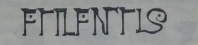
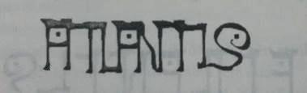
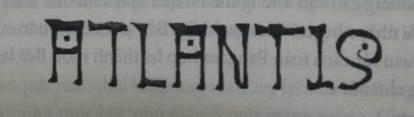
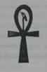

Hội đồng Trưởng lão mới ngồi đầy hai hàng ghế cao. Jake và Kady lại một lần nữa là trung tâm chú ý của sáu cặp mắt. Hàng trên là ba trưởng lão cũ trước đây - Tiberius, Ulfsdottir và Wu - cả ba người đều bầm giập, máu me và trông già đi nhiều.
Đã ba ngày trôi qua kể từ ngày Jake hồi phục lại màn chắn của thung lũng. Ba ngày toàn những chất vấn và chất vấn. Mọi người của Calypsos phải đối mặt với một sự thật khó khăn. Dù hiện tại thung lũng của họ là an toàn, nhưng sự an toàn đó không phải là vĩnh cửu. Kể từ nay trở đi, họ sẽ phải tăng cường cảnh giác.
Thầy Balam ngồi chính giữa hàng ghế dưới, bên phải là Quốc sư Zahur còn bên trái là một quốc sư mới. Thầy đứng dậy, nghiêm trang cất lời, "Quốc sư mới của chúng ta đã để nghị tổ chức một buổi lễ riêng tư để vinh danh năm vị anh hùng nhỏ tuổi đã bảo vệ thung lũng chúng ta và ngôi đền lớn.”
Balam hướng qua trái.
Thành viên mới của Hội đồng Trưởng lão chống cây quyền trượng đứng dậy. Những chiếc vòng đồng treo trên tay cầm bằng gỗ rung lên leng keng như tiếng phong linh, nhảy nhót trong ánh đèn. Vị trưởng lão người Ur gật đầu với năm đứa nhỏ đang đứng ngay chân dãy ghế.
Đàng sau Jake và Kady là Marika, Pindor và Bach’uuk. Ba đứa kia mặc những bộ quần áo đẹp nhất của tụi nó, đứng nghiêm trang. Jake và Kady thì mặc bộ đồ đi săn đã giặt ủi thẳng thớm. Tụi nhóc chỉ xoay xở được tới đó. Không đứa nào biết sẽ xảy ra chuyện gì.
Vị trưởng lão người Ưr, tên là Meruuk, nặng nề bước ra sau băng ghế, chậm chạp bước lại gần năm đứa bọn cậu. Vị bô lão này là người Ưr đầu tiên được nhận chức Quốc sư trong Hội đồng Trưởng lão. Vị trí danh dự đó là để tưởng thưởng cho sự tham gia của người Ưr trong công cuộc bảo vệ Calypsos và để bù đắp lại sự thờ ơ bấy lâu nay. Người Ur và những người trong thành phố Calypsos không thể thờ ơ với nhau thêm nữa, nếu họ còn muốn tiếp tục tồn tại. Chúa Sọ có thể sẽ lại tấn công, và nếu chuyện đó xảy ra, cả thung lũng sẽ phải đoàn kết lại.
Trưởng lão Meruuk vẫy tay bảo tụi trẻ đứng thành một hàng. Vị trưởng lão nhìn khắp lượt từ trên xuống dưới, bắt đầu từ Jake. Ông cúi lại gần, cấm lấy tay trái Pindor, giở cổ tay cậu ra. Rồi Trưởng lão Meruuk giơ một cái vòng bằng bạc lên cao cho tất cả thấy.
“Chiếc vòng kim loại này từ bầu trời đêm xuống đã rơi xuống ngọn lửa đỏ”, vị trưởng lão người Neanderthal ngân ra. “Nó chứa một bí thuật mạnh mẽ hiếm thấy - sức mạnh kết nối. Nó sẽ khiến tất cả các cháu trở thành một.”
Trưởng lão Mer'uuk bước tới trước, tròng chiếc vòng vào cổ tay Pindor, rồi bước qua chỗ Bach’uuk, tròng một chiếc vòng khác vào cổ tay thằng bé Neanderthal.
Marika đứng cạnh Jake. Nhỏ chăm chú quan sát Ttrưởng lão Meruuk đeo chiếc vòng vào cổ tay trái Kady. Tất cả mấy cái vòng hình như đều đúc từ một khuôn. Lát sau Marika nghịch nghịch cái vòng quanh cổ tay nó.
“Chắc được làm từ đá nam châm”, nhỏ thì thầm.
Đá nam châm là một cái tên cổ. Jake cũng đoán mấy cái vòng này dược đẽo từ đá có đặc tính nam châm tự nhiên.
Jake đưa tay ra, kéo cổ tay áo lên. Trưởng lão Meruuk rút ra chiếc vòng thứ năm. Chiếc vòng để hở và có một cái chốt để chốt lại. Vị trướng lão đặt chiếc vòng lên cổ tay Jake rồi gài lại.
"Vậy là mối dây liên kết đã hoàn tất” Ttrưởng lão Meruuk nói. “Giờ thì tất cả các con là một."
Jake xoay xoay chiếc vòng quanh cổ tay, nhíu mày. Cậu không tìm thấy một khớp nối nào cả, thậm chí cả một vết nối nhỏ giữa hai phía chiếc vòng cũng không có. Nó hoàn toàn nhẵn nhụi, cứ như thể được đúc căn theo cổ tay cậu vậy. Jake giơ tay lên nhìn kĩ hơn. Cậu không thấy vết gì trên bề mặt trơn láng của chiếc vòng, nhưng lại nhìn ra một cái gì đó. Ở rìa ngoài chiếc vòng có khắc mấy chữ mờ mờ. Jake nhận ra thứ chữ đó, đó là thứ ngôn ngữ xuất hiện khắp kim tự tháp.
Jake bối rối bỏ tay xuống rồi nhìn lên. Trưởng lão Meruuk vẫn đang đứng trước mặt cậu, hơi mỉm cười.
Vị trưởng lão nhăn nheo cúi sát lại gần Jake, thì thào vào tai cậu, “Con phải vượt ra khỏi giới hạn trong một thời gian ngắn để thấu được sự thật.”
Ông nói những lời lạ lùng đó rồi đứng thẳng dậy, quày quả trở về chỗ trên hàng ghế cao.
Trong khi chờ đợi, Jake liếc nhìn nguyên hàng bọn cậu từ trên xuống dưới. Cả năm đứa bọn cậu mang năm cái vòng giống hệt nhau. 'Giờ tất cả các con là một', Trưởng lão Mer'uuk đã nói vậy. Vậy có nghĩa là gì nhỉ... còn câu bình luận cuối cùng của ông nữa chứ? Con phải vượt ra khỏi giới hạn trong một thời gian ngắn để thấu được sự thật.
Cuối cùng Trưởng lão Tiberius cũng lên tiếng, “Trước khi giải tán, có ai còn yêu cầu gì nữa không?”
Câu hỏi nọ là dành cho những trưởng lão khác, nhưng Jake bỗng giơ tay, bước lên. Những lời của vị trưởng lão người Ur vẫn còn ong ong trong đầu cậu, nhất là chữ thời gian. Chữ đó nhắc nhở Jake về chiếc đồng hồ vàng của cha trong túi áo, về nơi Jake đã tìm ra chiếc đồng hồ áy: trong những bánh răng lịch khổng lồ của người Maya đang tích tắc đếm ngày.
Mọi thứ - tất cả những bí ẩn của vùng đất này - dường như đều xoay quanh một thứ.
Thời gian.
Trưởng lão Tiberius gật đầu với Jake. "Cậu muốn nói gì, Jake Ransom?”
“Cháu muốn xin một điều, nếu được phép.”
Trưởng lão Tiberius ra hiệu cho cậu tiếp tục.
“Cháu muốn vào kim tự tháp một lần nữa,” Jake nói. "Cháu muốn trở lại nơi cháu đã tìm thấy chiếc đồng hồ của cha cháu.”
Kady cũng lên tiếng, “Cháu cũng thế.”
Hai chị em cậu đã nói với nhau về chuyện đó. Kady muốn tận mắt nhìn thấy căn phòng, còn Jake thì cảm thấy có một manh mối gì đó đã vuột khỏi tay mình khi cậu vội vội vàng vàng băng qua kim tự tháp.
Trưởng lão Tiberius nhăn mặt, “Dù ta rất cảm kích tất cả những điều hai cháu đã làm cho Calypsos, nhưng vào ngôi đền vẫn là điều cấm kị. Nhất là trong lúc này. Nhưng ta sẽ để cho các quốc sư quyết định.”
Thầy Balam giơ một tay. “Theo luật lệ, chỉ có quốc sư được phép bước vào ngôi đền lớn. Điều đó là rõ ràng và phải được tuân thủ."
Jake cảm thấy cơ hội vuột khỏi tầm tay cậu.
“Tuy nhiên," thầy Balam tiếp lời, “không nhất thiết là chỉ có ba pháp sư. Tôi đề nghị Hội đồng biểu quyết cho ý kiến nhận hai đứa trẻ này làm quốc sự tập sự trong vòng một ngày bằng cách giơ tay.”
Cả sáu cánh tay đều giơ lên cao.
Thầy Balam tay xuống bàn, bí mật nháy mắt với Jake. “Vậy là mọi việc đã suôn sẻ."
Hai tiếng sau, Jake và Kady đã ở trên đỉnh kim tự tháp. Phía trên kia, con rồng đá vẫn lặng lẽ tiếp tục nhiệm vụ canh gác của mình. Thầy Balam đang đứng trên bọn cậu một nấc thang; hướng lòng bàn tay về phía lớp màn chắn vô hình bảo vệ ô cửa vào tròn tròn.
“Vẫn còn mạnh lắm", thầy Balam thở phào.
Thậm chí đứng ở đây Jake cũng cảm thấy được điều đó. Trường lực như một luồng gió cố đẩy cậu ra xa. Cậu chỉnh lại ba lô trên vai, cảm thấy hơi căng thẳng khi vào lại bên trong kim tự tháp như vầy.
“Trước hết, tất cả chúng ta phải nắm tay nhau", thầy Balam bảo, “để thầy dẫn hai con vào trong,”
Kady nắm lấy tay thầy, rồi chìa tay ra cho Jake. Nhưng Jake lại đang quay đi nhìn đâu đó.
Marika, Pindor và Bachuuk đứng chờ ở nấc bên dưới. Tụi nó không được phép vào trong, nhưng vẫn cứ tới. Tụi nó biết đây là một chuyện rất quan trọng với Jake.
Jake nhảy xuống, chụp lấy tay Pindor theo kiểu người La Mã. “Cảm ơn các bạn đã đến đây,” cậu nói. “Nếu không có các bạn, tớ không biết mình sẽ ra sao nữa."
Pindor đỏ bừng mặt vì rất ít khi được khen, nhưng Jake đoán từ nay thằng bạn của mình sẽ quen với chuyện đó thôi.
Jake cũng bắt tay Bachuuk như vậy, nhưng khi cậu định cầm tay Marika thì nhỏ gạt ra và ôm chầm lấy cậu.
“Chúng tớ sẽ chờ ở ngoài này,” nhỏ thì thầm vào tai Jake.
Hơi thở cậu nghẹn lại trong cổ. Mặt cậu nóng bừng lên, chắc là đỏ y chang Pindor. “Tụi tớ sẽ ở trong đó hơi lâu đấy,” cậu lẩm bẩm bước lùi lại.
“Chúng tớ sẽ vẫn chờ ở đây", Pindor bảo, cậu liếc hai đứa kia, cả hai cùng gật đầu.
Jake mỉm cười, cậu biết nụ cười của cậu chắc ngượng nghịu lắm, nhưng mà cậu cười thật. Cậu chưa bao giờ có những người bạn như vậy. Ngay lúc đó, cậu nhận ra cậu đã bỏ lỡ mất những gì trong đời. Ba năm qua, cậu đã quá tập trung vào chuyện nối gót cha mẹ, đến nỗi đã bỏ qua một điều, rằng có bạn bè bên cạnh cùng tiến bước thì con đường đi sẽ dễ dàng hơn rất nhiều. Nhưng cũng giống như Pindor làm quen với những lời khen, từ nay Jake sẽ phải quen với điều đó.
"Em có đi không đây?” Kady thở dài bực bội.
Jake ào lên, vẫy vẫy tay với tụi bạn rồi nắm lấy tay chị. Thầy Balam dẫn hai đứa bước qua cửa. Cảm giác rùng mình lại một lần nữa bao trùm cả người, làm tóc gáy cậu dựng đứng cả lên. Rồi phút sau bọn cậu đã vào trong; từ từ bước xuống dưới kim tự tháp.
Thầy Balam vừa đi vừa nói gì đó với Kady, nhưng Jake không để ý nghe thấy gì cả. Lúc ấy tâm trí cậu đã vào căn phòng để lịch Maya rồi. Cậu đã bỏ qua một điều gì đó. Chắc là vậy... nhưng là điều gì mới được?
Đến tâm kim tự tháp, Kady hoàn toàn choáng ngợp trước khối cầu ngọc khổng lồ - trái tim kim tự tháp. Nó xoay chuyển, tạo nên vô số những kết hợp của những kí tự lạ lùng.
“Chị cảm thấy nhịp đập của nó!” Kady kinh ngạc lên tiếng.
Jake cũng cảm thấy nhịp đập của trái tim ngọc. Từ quả cầu khổng lồ phát ra nhịp tim thình thịch. Bên dưới là ba quả cầu xoay tròn Quả cầu xanh lục sáng rực, hệt như hai quả cầu hồng ngọc và lam ngọc.
Thầy Balam nhận thấy sự chú tâm của Jake, “Bóng đen nhiễm vào tâm quả cầu không gây ra hậu họa gì về lâu về dài. Con rất sáng suốt khi nghĩ ra cách chiếu ánh mặt trời vào lòng quả cầu. Rất thông minh!”
Jake không nhận lời ca ngợi. “Con có được ý tưởng đó là nhờ có Mari và những điều thầy đã dạy con.”
Thầy Balam nhướng mày.
Jake giải thích bằng cách dẫn lại bài học đầu tiên vị quốc sư đã dạy mình, “Mặt trời khởi đầu cho mọi thuật'.”
Thầy Balam cười. “Vậy thỉnh thoảng cũng có người chịu nghe thầy nói đó chứ. Dù sao thì con cũng đã rất thông minh khi nghĩ ra kế hoạch đó.” Thầy xoa đầu Jake, như một người cha đối với con trai mình. Cảm giác ấm áp lan khắp người Jake.
“Ta đoán,” thầy Balam nói tiếp, “con rất nóng lòng xuống tiếp cận phòng bên dưới.”
“Vâng ạ. Con và Kady có thể tự đi được không?”
Jake muốn được một mình khám phá căn phòng. Nếu muốn hỏi gì, cậu có thể quay lại hỏi sau cũng được.
Thầy Balam không phản đối ý định của cậu, khoát tay, “Thầy có cả mớ việc phải làm ở đây rồi. Khi nào xong thì tụi con cứ lên đây".
Jake phải tự kìm lại để khỏi chạy vù đi. Cậu dẫn Kady tới chỗ cửa đằng xa, bước xuống cầu thang xoắn. Căn phòng tròn để lịch Maya trông vẫn hệt như trước. Trên nền đá, hai bánh răng vẫn lấp lánh trong ánh đèn mờ mờ.
Kady sững sờ, nhưng lần này thì hoàn toàn sai chỗ. “Nhiều vàng quá! Cả một gia tài chứ không ít.”
“Đó đâu phải lý do chúng ta tới đây,” Jake bảo.
Kady đảo mắt nhìn cậu. “Chị biết, chị biết, nhưng như vậy thì đâu có nghĩa là không được nhìn.”
“Đừng có đụng vào thứ gì đó.”
Jake băng qua bên kia phòng. Cậu muốn quan sát căn phòng lần nữa, thật từ tốn, kĩ càng. Cha cậu đã từng dặn, phải chú tâm vào từng chi tiết. Tất cả các nhà khoa học phải có trách nhiệm làm việc thật cẩn trọng khi đối mặt với những bí ẩn của cuộc sống này.
Jake lôi cái đồng hồ bỏ túi ra.
Jake thật tình không muốn hiểu sai chuyện này.
“Em tìm thấy cái đổng hồ của cha ở đâu?” Kady hỏi.
Jake chỉ vào cái bánh răng bên trong. “Nó nằm trên sàn, chỗ đó đó.”
“Nằm đó vậy thôi sao?"
Thì em vừa nói rồi đó.
Kady chìa tay ra. “Cho chị xem nào.”
Jake ngập ngừng. Cậu luôn giữ cái đồng hồ bên mình không rời; vì vậy mà Kady không có lúc nào tự mình xem được.
Jake miễn cưỡng đặt cái đồng hồ vào tay cô. “Chị cẩn thận đó.”
Kady liếc xéo cậu em rồi quay đi. Cô bỏ Jake lại, tự mình khám phá căn phòng.
Jake tập trung trở lại vào căn phòng. Trên tường viết đầy chữ. Hẳn là phải có một lời giải nào đó cho thứ ngôn ngữ bí hiểm này. Cậu đã hỏi thầy Balam, nhưng không ai ở Calypsos dịch được thứ chữ đó.
Jake quét mắt nhìn khắp lượt rồi dừng lại ở ba tấm bản đồ được khắc vào như một bức phù điêu ở một mảng tường. Chân cậu tự động bước lại gần. Mấy tấm bản đồ này có gì đó...
Cậu lại ngước mắt lên nhìn ba tấm bản đồ, quan sát những lục địa hiện đại, như những mảnh ghép của trò xếp hình, ráp lại thành một lục địa khổng lồ gọi là Pangaea. Tại sao cậu cứ bận tâm gì đó về mấy tấm bản đồ này chứ?
Bỗng Jake nhận ra hàng chữ viết dưới tấm bản đồ. Trước đó vì quá choáng váng với phát hiện rằng cậu hiện đang ở Pangaea nên cậu không nhận thấy dòng chữ bên dưới. Nhưng vẫn chỉ là thứ chữ kì lạ đó.

Cậu chẳng hiểu gì cả. Cậu hướng sự chú ý trở lại ba tấm họa đồ tròn. Cậu ngắm nghía đủ kiểu. Bảy lục địa nhập lại thành một đại lục địa. Nhưng cậu vẫn không thể bỏ qua mấy chữ bên dưới được. Chúng chỉ nhảy nhót nơi khóe mất cậu. Bảy kí tự. Bảy phần của câu. Jake lại quan sát cách toàn Pangaea hợp lại thành một. Rồi lại quan sát những chữ đó.
Giả sử...?
Jake đẩy những kí tự khít lại gần nhau trong tâm trí.

Một cái gì đó đang thành hình. Một cái gì đó trông rất quen. Đầu cậu ong lên vì bí ẩn.
Jake sờ túi áo, lấy quyển sổ ghi chép của mẹ ra. Cậu giật một trang trắng gần cuối ra, rút cây viết chì than đính ở góc bìa ra. Cậu ép tờ giấy vào tường, để cây viết chì trên bề mặt để lấy mẫu những chữ nọ.
Vậy là cậu đã có một bản sao những chữ nọ trên giấy. Cậu quỳ xuống, gấp bỏ phần giấy giữa những kí tự đi, để ghép chúng lại thành một. Cũng như cách những lục địa đã tạo thành Pangaea.
Jake cẩn thận nối chúng lại với nhau thành một từ duy nhất. Jake quan sát thành quả của mình.

Cậu đọc to lên, “Atlantis.”
Jake choáng váng đứng phắt dậy. Tờ giấy run rẩy trong tay cậu. Giờ thì cậu đã hiểu điều gì đã lôi kéo cậu lại nơi này. Cậu thầm tách những kí tự nọ ra thành một hình ảnh quen thuộc hơn trong đầu.
Jake lùi ra xa khỏi bứt tường. Sự thật là vậy sao? Chẳng lẽ cả cái kim tự tháp này và những tri thức nơi đây đều từ Atlantis mà ra? Atlantis - hòn đảo thần thoại, nơi cư ngụ của một tộc người thông thái? Cậu cố nhớ lại tất cả những gì mình biết về Atlantis. Plato, một trong những triết gia nổi tiếng nhất của Hy Lạp, là người đầu tiên viết về Atlantis. Ông khẳng định mình đã từng đến Atlantis, chiêm ngưỡng những kì quan nơi đó. Và theo câu chuyện của ông, hòn đảo nọ đã bị tàn phá nặng nề, tan rã và chìm xuống biển.
Jake bước trở lại bốn tấm bản đồ. Cậu chạm tay vào bề mặt Pangaea. Đại lục địa này đúng là nhìn giống một hòn đảo thật. Có phải Plato đã đến dây không? Có phải ông cũng bị mang đến đây như Jake và Kady? Và có phải ông đã hình tượng hóa khi nói rằng Atlantis đã biến mất vào lòng dại dương? Có thể thật sự ý ông muốn nói là toàn bộ nền văn minh đã biến mất vào dòng chảy mênh mông của thời gian.
Quá nhiều thứ để tiếp nhận. Jake lùi bước. Cậu quay qua, sững sờ, chong mắt ra ngó bức tường mà đầu thì hình dung ra trái tim ngọc phía trên kia. Tất cả những thứ này là thành tựu của một nền văn minh đã bị thất lạc, Atlantis ư? Có phải công nghệ của họ đã mang những chủng tộc người lưu lạc khác đi ngược thời gian trở lại Pangaea này? Hay người Atlantis là tộc người đầu tiên trong những tộc người lưu lạc? Có phải chính họ đã khai sinh tất cả những điều này? Nếu vậy thì giờ họ ở đâu?
Hết câu hỏi này đến câu hỏi kia bật ra, tràn ngập tâm trí Jake.
Jake ôm đầu bằng cả hai tay. Cậu giải được một bí ẩn, nhưng bí ẩn đó lại kéo theo cả ngàn bí ẩn khác.
“Jake!”
Tiếng gọi của Kady cắt ngang dòng suy nghĩ rối rắm của cậu. Cậu quay sang Kady. Cô đang đứng giữa cái bánh răng bên trong, hai tay cầm đồng hồ. Cô mở nắp đồng hồ ra như thể để xem giờ, nhưng hình như cô chăm chăm chú ý một điều gì khác kia.
Jake mừng được nhãng ra một chút. Cậu chạy qua, bước vào cái vòng bên trong cùng chị mình.
“Gì vậy?”, Cậu hỏi.
Kady nghiêng cái đồng hồ trên tay, chỉ vào mặt bên dưới nắp đồng hồ. Jake chụp lấy cái đồng hồ trong tay cô, hướng nó về chỗ sáng. Trên lớp vỏ bằng vàng có một hình khắc rõ ràng.

Jake nhận ra cái hình đó. Đó là chữ ankh, hình chữ thập chìa khóa, biểu tượng của sự sống trong tiếng Ai Cập. Đó là một trong những biểu tượng quan trọng nhất trong tiếng Ai Cập cổ. Những pha-ra-ông thường cầm chữ thập chìa khóa này trong những buổi lễ quan trọng.
“Và nhìn này,” Kady bảo, cô kéo cái đồng hồ lại gần. “Cây kim giây đang quay ngược này!”
Jake đã nhận ra chuyện đó từ trước rồi, nhưng cậu quên bảo Kady. So với chuyện khám phá ra cái đồng hồ của cha cậu thì bí ẩn đó không là gì.
Jake tìm cách giật cái đồng hồ lại. Cậu muốn quan sát chữ thập chìa khóa kĩ hơn.
Kady giằng ra. “Chị không hiểu. Đồng hồ của cha bị sao vậy? Sao mình không chỉnh lại thử xem?”
Jake vẫn cố tìm cách nhìn lại biểu tượng Ai Cập nọ, phải sau một lúc cậu mới hiểu ra ý Kady.
Nhất là một chữ.
Chỉnh lại
Cậu đã quá chậm. Kady đã chạm tay vào chỗ dây cót lên dây của đồng hồ. Bộ phận lên dây không chỉ để lên dây mà còn để điều chỉnh thời gian nữa.
“Không được!” Jake cảnh báo.
Trong thời khắc đó, cậu bỗng nhớ lại một câu ngạn ngữ thầy Balam đã dạy Marika: Nhìn hai và bước một. Đó là một câu cách ngôn khuyên người ta cẩn trọng và biết tự kiềm chế.
Kady đâu biết câu đó. Lúc này cô đã kéo cái dây cót ra mất rồi.
Tiếng bánh răng rin rít ầm ĩ lập tức vang lên, không phải từ cái đồng hồ, mà từ mấy cái bánh răng vàng chung quanh chị em cậu. Jake và Kady đứng ở giữa, vòng quanh lịch Maya xoay chuyển xung quanh. Ban đầu là quay chậm, rồi càng lúc càng nhanh hơn. Bánh răng quay nhanh đến nỗi Jake và Kady mà sẩy bước một chút chắc gãy chân liền. Vòng quay nhanh và nhanh hơn nữa, bánh xe nhòa đi, mờ mờ ánh vàng.
Jake nắm chặt tay Kady, còn cái đồng hồ vẫn lọt thỏm trong tay hai đứa. Hai bánh răng quay cuồng thành một khối mờ mịt, Jake bỗng cảm thấy có một lực gì đó hình thành dưới chân.
Cậu chỉ kịp thét lên một tiếng “Giữ chặt...”
Ánh sáng trắng tỏa lên, bao trùm. Ánh sáng chói lên đột ngột làm Jake bị lóa mắt. Dù không nhìn thấy gì, nhưng cậu vẫn cảm thấy như mình đang được bắn lên trời, như thể là một cái thang máy lao đi với sức đẩy tên lửa. Tất cả kéo dài chưa đến một khắc.
Rồi đột ngột mọi thứ kết thúc.
Cậu chớp mắt cố điều chỉnh mắt lại cho quen với luồng ánh sáng còn sót lại, sấm chớp ầm ầm trên đầu cậu.
Sấm chớp?
Ánh sáng chói lòa nhòa đi, trở lại bình thường.
Thị lực Jake trở lại bình thường cậu chết lặng nhìn ra xung quanh. Kady rúm lại bên cạnh cậu, cô cũng thần ra choáng váng. Khắp xung quanh là những lồng kính, những đôn bệ trưng bày cổ vật. Cách đó một bước chân là khối kim tự tháp vàng, bên trên là một con rồng ngọc bích.
Bọn cậu đã trở lại Bảo tàng Anh quốc!
Trở về nhà.
Tất cả chỉ là giấc mơ thôi sao?
Jake vẫn nắm chặt tay Kady. Chiếc đồng hồ quả quýt của cha vẫn nằm trong tay cô. Khối kim loại vẫn cồm cộm trên tay cả hai.
Cậu chưa kịp hoàn hồn thì một tiếng thét kinh thiên động địa đã vang lên làm hai đứa hoảng hồn.
“KHÔNG!"
Jake quay lại. Một người đàn ông đồ sộ đang lao về phía chị em cậu. Đó là Morgan Drummond, vệ sĩ người ta chỉ định cho bọn cậu. Vài giây trước khi hai đứa biến mất, ông Drammond cũng lao đến la hét thế này.
Hệt như bây giờ.
“Lùi lại!” Ông Drummond thét lên. Nhưng bỗng ông dừng phắt lại; gãi gãi đầu rồi nhìn ra xung quanh như thể cảm thấy có chuyện gì đó không ổn. Ông hít một hơi cho tỉnh rồi trân trân nhìn hai đứa, tỏ ra hoàn toàn ngờ vực.
“Hai đứa đang làm gì hả?”
Jake giật cái đồng hồ vàng khỏi tay Kady, giơ nó ra trước mặt Morgan. Ông này chưa kịp thấy gì thì cậu đã nhét lại cái đồng hồ vào túi.
“Chỉ xem giờ thôi mà", Jake bảo, rồi bí mật lấy khuỷu tay thúc Kady một cái. Cô giật bắn người, rồi gật đầu lia lịa, không mở miệng nói được gì.
“Nếu hai đứa coi giờ", ông Drummonđ nói, lấy lại giọng ra lệnh trịch thượng, “thì chắc cũng biết hai đứa ở trong đây một mình lâu rồi đó. Khi nào nhật thực kết thúc, những nhà bảo trợ của bảo tàng sẽ vào đây ngay.”
Jake nhìn ra cửa sổ. Nhật thực ư? Nếu nó vẫn chưa kết thúc, thì rõ ràng ở London thời gian vẫn chưa hề trôi qua. Bọn cậu đã ở Pangaea mười ngày, rồi trở lại đúng điểm khởi đầu.
Cả về không gian và thời gian.
Ông Drummond nhìn khắp lượt căn phòng, như thể tìm kiếm thứ gì đó. Mắt ông vẫn nheo lại; ông quay lại nhìn Jake và Kady. “Hai đứa có đụng vào thứ gì không đó?”
“Dĩ nhiên là không;” Jake nói, tỏ ra bị xúc phạm ghê gớm. Kady cũng lắc lắc đầu.
“Không có chuyện gì lạ xảy ra chứ?”
Jake nhăn mặt. “Có sấm chớp. Đèn tắt ngúm.” Cậu nhún vai. “Nhưng mà tụi cháu đâu có sợ bóng đêm này nọ gì đâu.”
Jake tỏ vẻ vô can, nhưng cậu chăm chú quan sát ông Drummond thật kĩ. Cậu nhớ những nghi ngờ trước đây đối với ông. Ông vệ sĩ đã khẳng định với Jake và Kady là người ta đưa hai đứa tới London chỉ để làm đình làm đám, thu hút giới truyền thông đến vụ triển lãm mà thôi. Nhưng lỡ như họ có một mục đích đen tối hơn thì sao? Một điều gì đó nham hiểm hơn? Ông chủ của ông Drummond phải chăng hi vọng hai đứa mở được lối vào Pangaea? Phải chăng đó là lý do hai đứa được đưa đến đây và bỏ lại một mình trong bảo tàng?
Ánh mắt ông Drummond sắc lên sự ngờ vực, nhưng tiếng ồn ào ở cửa lôi kéo sự chú ý của ông sang hướng khác. Tiếng xôn xao hào hứng rộn lên. Nhiều đàn ông và phụ nữ ăn diện đẹp đẽ lũ lượt kéo vào phòng.
Ông Drummond quắc mắt nhìn mấy người mới vào, giọng phảng phất nỗi thất vọng, “Tôi cho là đã tới lúc đưa hai cháu về lại khách sạn rồi. Sáng mai hai cháu sẽ đón chuyến bay sớm trở về nhà.”
Jake liếc mắt ngó Kady. Cậu giật cổ tay áo xuống che cái vòng đồng. Chị cậu làm theo. Jake đã nói cho chị cậu nghe về cái biểu tượng đã thấy trên thanh gươm của con grakyl và về mối ngờ vực của cậu đối với tập đoàn Bledsworth.
Khi Drummond quay qua nhìn đám đông đang lũ lượt kéo vào, một ánh bạc lóe lên, hướng ánh mắt của Jake vào chiếc kẹp cravat. Biểu tượng của tập đoàn thương mại BIedsworth là hình con griffin móng vuốt tua tủa, hệt như Kalvemm Rex, Chúa Sọ.
Ông Drummond quay sang hai đứa. Một ánh gì đó lóe lên, làm Jake một lần nữa lại để tâm tới cái kẹp cravat. Nếu chưa thấy vật đó bao giờ hẳn là cậu đã không để ý tới. Ánh mắt con griffin lóe lên ánh lửa đen kịt. Jake đã nhìn thấy đôi mắt đó khi ngồi trong chiếc limo chạy xuyên qua London. Lúc đó cậu tưởng đó là một viên kim cương đen nhỏ xíu.
Nhưng giờ thì cậu biết sự thật rồi.
Jake nhận ra con mắt đen kịt đó được tạo nên từ thứ gì. Đó làmột mẩu huyết thạch bé xíu, một thứ ngọc thạch sinh ra từ tà thuật hắc ám của Kalverum Rex.
Jake cố chống lại nỗi kinh sợ. Đây chính là bằng chứng rằng có mối liên hệ giữa quá khứ và hiện tại. Nhưng mối liên hệ ở đây là gì chứ? Jake tự buộc mình nhìn đi nơi khác, giấu đi những điều mình biết.
“Mọi việc xong xuôi hết rồi chứ?" Drummond hỏi.
Jake nhìn Kady. Nỗi choáng váng đã nhạt đi rồi thì mắt Kady bừng lên tia lửa. Cậu đọc thấy câu trả lời cho câu hỏi vừa rồi của Drummond trên nét mặt cô. Câu trả lời hệt như cậu.
Mọi việc vậy là đã xong chưa?
Lần đầu tiên, Jake và Kady có cùng một câu trả lời. Không... mọi chuyện chỉ mới bắt đầu thôi.